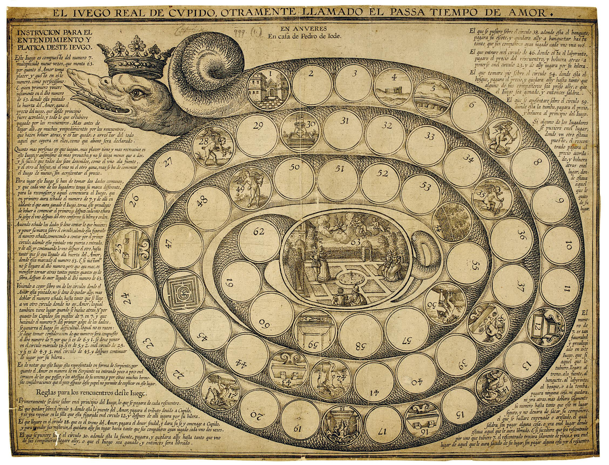

Royal Game of the Goose
 In Sprezzatura players represent their characters narrative long term resources through a race game similar to the Royal Game of the Goose. Everytime a player is using their agency on the narrative, they will roll some dice to move their pawn forward on the board. Similarly, giving up agency provides a way to regress their station. Once a player character reaches station 63, they have to retire from the game.
Narrative Resource
Despite many TTRPGs, where players can rely on resourcers like HPs, Stress boxes and Conditions, Sprezzatura emulates a character arc through a variant of the most famous race game of all time, the Royal Game of the Goose. During the Renaissance and Baroque eras, the Game of the Goose has been a metaphore for inner growth and the path of life itself. Many variants race games like Il Gioco del Giardin d'Amore(1616) have developed the idea of playing with chance on a spiral-like path of stations.
If a player reaches station 63 during a Scene something remarkable happens to the player character: their finale. According to the fiction, the Gathering can decide how this last deed looks like: it can be an heroic sacrifice, retirement from adventure or a miserable death.
You can physically deploy a board with pawns, or alteratively record each station position on each character sheet.
Advancing your station
Here a list of actions that will require the player to roll for advancing their pawn on the Game of Goose board:
- You play a Major Arcana card at the end of a Scene, becoming the next Host. 2d6
- You play a Minor Arcana to influence the result of a Challenge. 1d6
- You re-roll up to two dice from your dice poll before adding extra dice from Resonance Pool. 1d6
- You, the current Host, introduce a new Wheel to the current Scene. 1d6
- You share your Resonance Pool with the active player. 1d6
Revert your station
Here a list of actions that will regress the station value of a player:
-
You are willingly exclude your character form the Scene. If you choose so, the Host will provide you instructions in playing as NPC. 3d6
-
Before rolling for a Challenge, you willingly accept failure scoring no Triumphs. The Host together with the rest of the Gathering will take control of the narrative. 2d6
Major Arcanas
Some Major Arcanas can alter the amount of dice to be rolled for advacing or reverting the station of a player. For more information see this section.